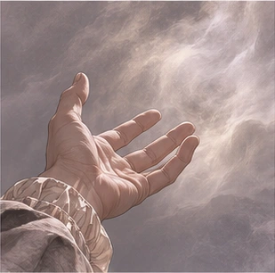

장면 01 / 28Zueignung헌시안개 속 흔들리는 형상파우스트가 등장하기 전에, 그 이야기를 오래 품고 살아온 시인이 먼저 입을 열었다. 젊어서 처음 몇 대목을 쓰고 가까운 이들에게 읽어 주었던 이야기였다. 오랜 시간이 지나 다시 그 인물들을 떠올리자, 안개 낀 언덕을 건너오는 사람들처럼 모습이 나타났다. 걸음걸이는 얼핏 알아볼 만한데 얼굴은 아직 흐렸다.독일어 원문 · 한국어 번역Ihr naht euch wieder, schwankende Gestalten, Die früh sich einst dem trüben Blick gezeigt. 그대들이 다시 다가오는구나, 흔들리는 형상들이여, 일찍이 흐릿한 내 눈앞에 나타났던 그대들이여.붙잡으려는 손시인은 손이라도 내밀면 그들을 붙잡을 수 있을 것 같았다. 이번에는 흐릿한 모습을 문장으로 옮길 수 있을까. 그보다 먼저 확인하고 싶은 게 있었다. 예전에 밤늦도록 저 인물들을 생각하던 마음이 자기 안에 아직 남아 있을까.독일어 원문 · 한국어 번역Versuch ich wohl, euch diesmal festzuhalten? Fühl ich mein Herz noch jenem Wahn geneigt? 이번에는 그대들을 붙잡아 보려 하는가? 내 마음은 아직도 그 옛 환상으로 기우는가?다가오는 기억한 사람을 자세히 보려는 사이 그 옆으로 또 다른 사람이 다가왔다. 안개 속을 거슬러 밀어내기엔 너무 많은 얼굴이었다. 시인은 잠시 가만히 있기로 했다. 어디까지 기억해 낼 수 있는지는 그들이 다가오고 나면 알 터였다.독일어 원문 · 한국어 번역Ihr drängt euch zu! nun gut, so mögt ihr walten, Wie ihr aus Dunst und Nebel um mich steigt; 그대들이 밀려오는구나! 좋다, 마음껏 나를 지배하라, 연무와 안개 속에서 내 주위로 떠오르는 대로.젊은 마음을 흔드는 숨결가벼운 바람이 얇은 옷자락을 들어 올리듯, 그들의 기척만으로도 시인의 가슴이 들썩였다. 젊었을 때 새 장면이 떠오르면 한시도 앉아 있기가 어려웠다. 오랜만에 느끼는 바로 그 설렘이었다.독일어 원문 · 한국어 번역Mein Busen fühlt sich jugendlich erschüttert Vom Zauberhauch, der euren Zug umwittert. 그대들의 행렬을 감싸는 마법 같은 숨결에 내 가슴은 젊은 날처럼 떨리는구나.행복했던 날들그러자 안개 뒤에서 햇빛이 들던 길이 떠올랐다. 나무 아래로 두 사람이 나란히 걸어가는 모습이 보이는 듯했다. 그 얼굴들을 떠올리고 나니, 시인은 그 시절엔 무엇이 그리 좋아서 친구들만 만나면 웃었던가 하고 생각했다.독일어 원문 · 한국어 번역Ihr bringt mit euch die Bilder froher Tage, Und manche liebe Schatten steigen auf; 그대들은 즐거웠던 날들의 모습을 데려오고, 정다운 그림자들도 여럿 떠오르는구나.첫사랑과 우정의 그림자빛이 번지는 길에 서로를 바라보는 두 사람이 어른거렸다. 시인은 처음 마음을 주었던 사람을 떠올렸다. 그 무렵 기쁜 일이 있으면 누구보다 먼저 찾아가 말했던 친구들도 생각났다. 오랫동안 입에 올리지 않아 끝부분이 희미해진 옛이야기처럼, 기억은 군데군데 비어 있었다. 그런데도 어떤 얼굴은 당장 말을 걸어올 듯 가까웠다.독일어 원문 · 한국어 번역Gleich einer alten, halbverklungnen Sage Kommt erste Lieb und Freundschaft mit herauf; 오래되어 반쯤 잊힌 전설처럼 첫사랑과 우정도 함께 되살아나는구나.미로 같은 삶의 길좋았던 일을 따라가다 보니, 그때 그들에게 하지 못한 말까지 생각났다. 정원길을 위에서 내려다보면 갈림길마다 어디로 이어지는지 보인다. 시인은 지나온 삶도 이제는 그렇게 볼 수 있을 줄 알았는데, 돌이켜 보니 그때처럼 어디서 길을 잃었는지 알 수 없었다. 지나간 줄 알았던 아픔이 다시 밀려왔다.독일어 원문 · 한국어 번역Der Schmerz wird neu, es wiederholt die Klage Des Lebens labyrinthisch irren Lauf, 아픔은 새로워지고, 탄식은 되풀이하네, 미로처럼 헤매던 삶의 길을.떠나간 이들의 빈자리그는 떠나간 사람들의 이름을 하나씩 떠올렸다. 얼마든지 다시 만날 수 있을 줄 알고 서둘러 작별했던 이들도 있었다. 낙엽이 내려앉은 빈 벤치처럼, 이제는 그들이 앉던 자리만 기억에 남아 있었다.독일어 원문 · 한국어 번역Und nennt die Guten, die, um schöne Stunden Vom Glück getäuscht, vor mir hinweggeschwunden. 행복에 속아 아름다운 시간을 꿈꾸다가 나보다 먼저 사라진 좋은 이들의 이름을 부르네.사라진 첫 청중그중에는 시인이 새로 쓴 글을 가장 먼저 들어 준 친구들이 있었다. 이야기의 첫 대목은 그 얼굴들을 보며 읽을 수 있었다. 이어지는 이야기를 아무리 오래 다듬어도, 이번에는 그들 앞에 의자를 놓아 줄 수 없었다.독일어 원문 · 한국어 번역Sie hören nicht die folgenden Gesänge, Die Seelen, denen ich die ersten sang; 그들은 이어지는 이 노래를 듣지 못하리, 내가 처음 노래를 들려주었던 그 영혼들은.희미해진 메아리그때는 글을 한 대목 읽고 나면 누군가 웃거나 무슨 뜻인지 물었다. 물에 번지던 잔물결이 한참 뒤 잦아들듯, 방 안을 돌던 웃음과 대답도 이제 희미했다. 시인은 어떤 문장에서 그들이 가장 크게 웃었는지 떠올리려 했다.독일어 원문 · 한국어 번역Zerstoben ist das freundliche Gedränge, Verklungen, ach! der erste Widerklang. 다정하게 모였던 무리는 흩어졌고, 아아, 첫 메아리도 사라졌구나.낯선 군중 앞의 노래이번에 그의 글을 들을 사람들은 붉은 막 너머의 낯선 얼굴들이었다. 이야기가 재미있다면 박수를 보내 줄 터였다. 시인은 그 박수를 상상하고도 마음이 편치 않았다. 자기가 머뭇거리며 처음 읽어 주었던 문장을 기억할 사람이 그 객석에는 없을 것 같았다.독일어 원문 · 한국어 번역Mein Lied ertönt der unbekannten Menge, Ihr Beifall selbst macht meinem Herzen bang, 내 노래는 낯선 군중에게 울려 퍼지고, 그들의 박수마저 내 마음을 불안하게 하네.세상에 흩어진 벗들옛 친구들 가운데 아직 살아 있는 사람도 어딘가에 있을 것이다. 하지만 그들이 모두 다시 같은 곳에 모일 수는 없었다. 안개 낀 언덕에서 저마다 다른 길을 걷는 사람처럼, 서로의 소식이 닿지 않는 곳으로 흩어졌다.독일어 원문 · 한국어 번역Und was sich sonst an meinem Lied erfreuet, Wenn es noch lebt, irrt in der Welt zerstreuet. 한때 내 노래를 기뻐했던 이들은, 아직 살아 있다면, 세상 곳곳에 흩어져 헤매리.고요한 영혼의 세계를 향한 그리움시인은 떠들썩한 객석을 생각하던 끝에 오히려 조용해지고 싶어졌다. 안개가 내린 숲처럼 말소리 하나 없는 마음속이라면, 그리운 얼굴들이 사라지기 전에 조금 더 곁에 둘 수 있을 듯했다. 오래 잊고 지냈던 그리움이 그렇게 돌아왔다.독일어 원문 · 한국어 번역Und mich ergreift ein längst entwöhntes Sehnen Nach jenem stillen, ernsten Geisterreich, 그리고 오래 잊었던 그리움이 나를 사로잡네, 저 고요하고 엄숙한 영혼의 세계를 향한 그리움이.바람에 울리는 하프그가 낮게 읊는 시는 열린 창가의 바람 하프와 닮았다. 손으로 줄을 뜯지 않아도 바람이 지날 때마다 줄이 떨리며 소리를 내는 악기였다. 시인의 말도 일정한 가락을 찾기 전에, 기억이 닿는 곳마다 조금씩 다른 소리로 흘러나왔다.독일어 원문 · 한국어 번역Es schwebet nun in unbestimmten Tönen Mein lispelnd Lied, der Äolsharfe gleich, 내 나직한 노래는 아직 정해지지 않은 음조로, 바람에 울리는 하프처럼 떠도네.눈물과 부드러워진 마음문득 몸이 떨렸다. 눈물 한 방울이 뺨을 타고 내려오더니 그 뒤를 또 한 방울이 따랐다. 오래전 일이니 이제 괜찮을 거라 여겼는데, 막상 기억 속에서 그들을 다시 만나자 울음을 참을 이유도 잊었다.독일어 원문 · 한국어 번역Ein Schauer faßt mich, Träne folgt den Tränen, Das strenge Herz, es fühlt sich mild und weich; 전율이 나를 붙들고, 눈물 뒤에 눈물이 흐르며, 굳었던 마음은 온화하고 부드러워지네.잃어버린 것이 현실이 되다눈앞에 놓인 의자와 탁자는 방 저편으로 물러난 듯했다. 대신 햇빛 드는 길 위로 오래전에 헤어진 두 사람이 걷고 있었다. 손을 뻗어도 닿지 않는 그 길이 시인에게는 지금 자기 방보다 생생했다. 그렇게 돌아온 이야기가 어떻게 낯선 관객을 만나게 될까. 다음 장에서는 그 일을 맡은 세 사람이 아직 막이 오르지 않은 극장에 모인다.독일어 원문 · 한국어 번역Was ich besitze, seh ich wie im Weiten, Und was verschwand, wird mir zu Wirklichkeiten.내가 지닌 것은 아득히 멀리 있는 듯 보이고, 사라진 것은 내게 현실이 되어 돌아오네.전체 목차다음 장면 →